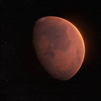

The Red Planet
Mars was named after the Roman God of War Distance from the sun is 141,700,000 miles Mars has 2 small moons named Phobos (Fear) and Deimos (Panic) coming from the horses that pulled the chariot of the Greek God Ares. Scientists think that mars may have had a thicker atmosphere early in its history. Mars has been documented for at least 4,000 years, and the first person to observe Mars with a telescope was Galileo Galilei in 1610. Mars is named after the Roman god of war due to its red appearance. Mars formed when gravity pulled swirling gas and dust in to become the fourth planet from the Sun about 4.5 billion years ago. Mars is about half the size of Earth, and like its fellow terrestrial planets, it has a central core, a rocky mantle, and a solid crust. Mars has been known since ancient times because it can be seen without advanced telescopes. These are just a few of the intriguing facts about Mars, a planet that has captured the imagination of scientists and space enthusiasts for generations. Ongoing missions and future exploration are likely to reveal even more about the planet's mysteries.Fun Facts About Mars
- Closest Neighbor: Mars is the fourth planet from the Sun and is Earth's closest planetary neighbor.
- Mars' Moons: Mars has two small moons, Phobos and Deimos, which are irregularly shaped and likely captured asteroids.
- Similar Length of Day: A day on Mars, known as a "sol," is only slightly longer than a day on Earth, with a duration of approximately 24.6 hours.
- Thin Atmosphere: Mars has a very thin atmosphere composed mostly of carbon dioxide, with traces of nitrogen and argon. It's not conducive to supporting human life without life support systems.
- Olympus Mons: Mars is home to Olympus Mons, the largest volcano in the solar system. It's about 13.6 miles (22 kilometers) high, nearly three times the height of Mount Everest. Valles Marineris: Mars boasts Valles Marineris, one of the largest canyons in the solar system. It is over 2,500 miles (4,000 kilometers) long, up to 7 miles (11 kilometers) deep, and in some places, over 120 miles (200 kilometers) wide.
